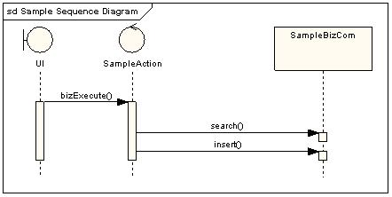
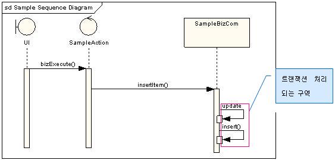

| Task: 설계 보고서정의서 작성 |
 |
|
| 구현 기술 요소를 반영하고 프리젠테이션 레이어의 로직을 설계하여 화면 및 프레젠테이션 레이어 개발에 필요한 정보를 정의한다. |
| Roles | Primary Performer: | Additional Performers: |
|---|---|---|
| Inputs | Mandatory:
| Optional:
|
| Outputs |
|
|
| Process Usage | ||
여기서는 SYSTEMiER 프레임워크나 Struts 프레임워크를 적용하는 상황, 즉 컨트롤러를 Action 클래스로 가정한다. 도출된 Action클래스에 오퍼레이션을 정의한다. (업무 분석에서의 컨트롤러 클래스로부터 오퍼레이션 추출) Action 클래스에는 별도의 트랜잭션 관리 책임이 없으므로, 하나의 업무에서 트랜잭션 처리가 필요한 작업 (등록, 수정, 삭제 등)이 연속으로 발생하는 경우, 이런 흐름처리는 서버단 (컴포넌트)로 위임하고, Action 클래스의 오퍼레이션에서는 한 업무를 위해서 하나의 컴포넌트 인터페이스 오퍼레이션만 호출되거나, 여러 오퍼레이션이 실행되더라도 시퀀스 다이어그램으로 사례를 들어 설명하면 다음과 같다.
 그림 1 허용되는 사례
이런 경우는 SampleAction에서 서버단 컴포넌트 오퍼레이션을 여러 개 호출하지만, search()는 조회성으로 트랜잭션 처리가 되지 않아도 무방한 성격이므로 문제되지 않는다.
그림 2. 문제 발생 가능한 사례 이 경우에는, update(), insert() 모두 트랜잭션 처리가 필요한 작업인데, SampleAction에서는 트랜잭션 처리 책임을 지지 않으므로, insert()가 실패하고 update()만 수행되는 상황이 발생할 수도 있다. 그러므로 이 부분은 이렇게 수정되어야 한다.  그림 3. 수정한 사례 참고로, 한 Action 클래스에 여러 오퍼레이션이 정의되는 경우, 해당 Action 클래스는 DispatchAction으로 구현해야 한다. (DispatchAction 구현 방법은 SYSTEMiER 적용 가이드 참조) |
|
설계자는 분석 결과를 바탕으로 기술구조에 따라 개별 화면과 관계된 구성요소를 정의한다.
설계자는 각 화면의 이벤트 처리에 필요한 컨트롤러의 오퍼레이션과 필요한 데이터를 정의한다.
설계자는 컨트롤러에서 호출하는 서버단 클래스 및 오퍼레이션을 정의한다.
설계자는 보고서 작성에 필요한 데이터를 취합하는 방식 (예 OLTP, Batch 등)을 결정한다.
설계자는 각 보고서 화면작성에 필요한 데이터를 추출하는 질의문을 정의한다. (레포팅 툴을 쓰는 경우 툴에 맞게 작성)
|